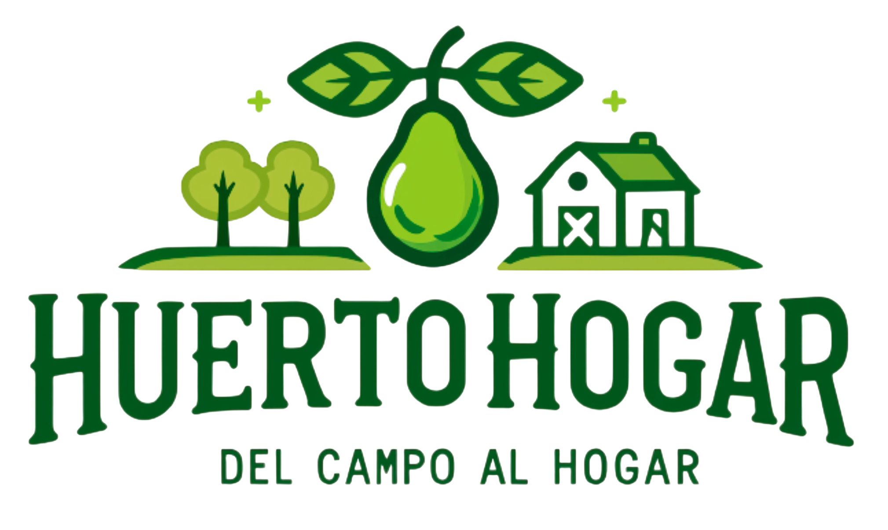

PRODUCTOS DE NUESTRA TIERRA
Tu huerta comienza aquí.
Conéctate con la naturaleza y lleva lo mejor del campo a tu mesa
Ver productos
Descubre la frescura del campo 🌿
Categorías
SELECCIÓN DE TEMPORADA
Productos destacados
¡ÚNETE A NOSOTROS!
y disfruta de productos frescos y saludables, directo a tu hogar.